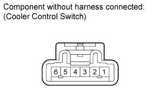
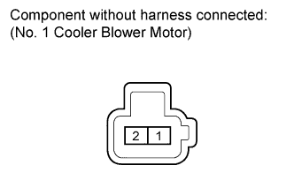
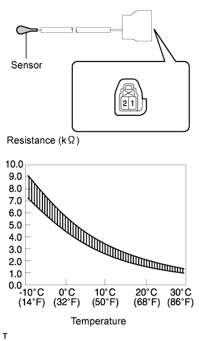

FRONT CONSOLE BOX (w/ Cool Box) > INSPECTION |
| 1. INSPECT COOLER CONTROL SWITCH SUB-ASSEMBLY |
 |
Measure the resistance according to the value(s) in the table below.
| Tester Connection | Switch Condition | Specified Condition |
| 1 - 2 | On | Below 1 Ω |
| 1 - 2 | Off | 10 kΩ or higher |
Apply battery voltage to the cooler control switch connector and check that the indicator illuminates.
| Measurement Condition | Specified Condition |
| Battery positive (+) → Terminal 3 Battery negative (-) → Terminal 4 | indicator illuminates |
| 2. INSPECT NO. 1 COOLER BLOWER MOTOR SUB-ASSEMBLY |
 |
Apply battery voltage to the blower motor connector and check the operation of the blower motor.
| Measurement Condition | Specified Condition |
| Battery positive (+) → Terminal 1 Battery negative (-) → Terminal 2 | Motor operates smoothly |
| 3. INSPECT NO. 3 COOLER THERMISTOR |
 |
Measure the resistance according to the value(s) in the table below.
| Tester Connection | Condition | Specified Condition |
| 1 - 2 | -10°C (14°F) | 7.40 to 9.20 kΩ |
| 1 - 2 | -5°C (23°F) | 5.65 to 7.00 kΩ |
| 1 - 2 | 0°C (32°F) | 4.35 to 5.40 kΩ |
| 1 - 2 | 5°C (41°F) | 3.40 to 4.20 kΩ |
| 1 - 2 | 10°C (50°F) | 2.68 to 3.30 kΩ |
| 1 - 2 | 15°C (59°F) | 2.10 to 2.60 kΩ |
| 1 - 2 | 20°C (68°F) | 1.66 to 2.10 kΩ |
| 1 - 2 | 25°C (77°F) | 1.32 to 1.66 kΩ |
| 1 - 2 | 30°C (86°F) | 1.05 to 1.35 kΩ |